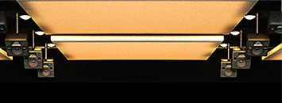

ドルビーアトモスは、2012年にドルビーラボラトリーズ（以下ドルビー）が発表した新しいシネマ音響です。
ドルビーアトモスは、映画のサウンドにより自然でリアルな音場や効果をもたらし、より感覚を刺激する生き生きとした映画体験によって、観客をストーリーに引き込むことができます。
ドルビーアトモスは、今日一般的に利用されている“チャンネルベース”のミキシング方式と汎用性の高い“オブジェクトベース”のミキシング方式を組み合わることにより、サウンドデザイナーやミキサーにこれまでにない新しい次元の表現力を提供します。
自由度の高いオブジェクトベースのミキシングを利用することで、映画館のどのような位置にも、個別の音を配置することができると同時に、より自由な移動を完全にコントロールすることができます。
ドルビーアトモスは、現行のスタジオ制作行程をそのまま利用できるように設計されているため、制作スケジュールにほとんど影響を与えません。スタジオで制作されたドルビーアトモスの音声ファイルは、ドルビーアトモス対応のシネマプロセッサーCP-850によって、各劇場のチャネル数やスピーカー位置、または音響特性にあわせて最適なレンダリングを行い、再生します。
そのため、スタジオでクリエイターが聴いた効果を、そのまま劇場の観客に体験していただくことができます。
スクリーンが大型の場合は、通常３ｃｈのスクリーン・チャンネル数を５チャンネルに増設することで、音の移動をさらにスムーズにすることができます。

天井に２列で配置されるサラウンド・スピーカーは、これまでにない、サウンドデザインを実現させることができ、観客をさらに映画に引き込む効果をもたらすことができます。
